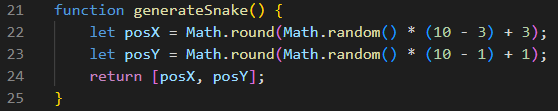

Основные разделы js кода:
Создание табличного поля, состоящего из 100 ячеек, каждая ячейка обозначается координатами posX и posY.

Нахождение начального случайного положения головы змейки, с учётом длины тела.
С помощью данной функции замещаем голову змейки телом в случае её удлинения.
Функция, с помощью которой генерируются координаты «еды» с учётом размера поля и расположения тела змейки.
Основная функция, задающая движение змейки в зависимости от направления, регистрирующая набирание очков и проигрыш.
Задаём частоту выполнения функции move(), в данном случае частота равна половине секунды.
Градация инструкций, задающих направление змейки в зависимости от нажатой клавиши.